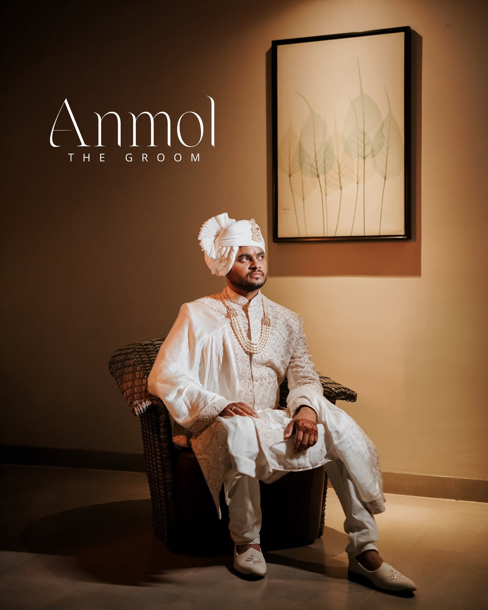

Listen first.
We learn what matters to you before deciding what your photographs should look like.

Guwahati · Assam · India
Wedding photography and films for people who want to remember more than what happened — they want to remember how it felt.
The best frames aren't always the obvious ones. They're the hand that finds yours, the room before everyone arrives, the laugh that breaks the pose.
We photograph with enough direction to make you look incredible, and enough observation to keep the photographs unmistakably yours.
The Wedlock way ↗

Between the rituals, there are the seconds that belong only to you.
Images that look extraordinary today —
and feel true years from now.
Real Wedlock films, placed directly inside the story. No stock footage. No detours.
A cinematic look at the atmosphere, details and emotion of a Wedlock celebration.
The camera is part of it. The experience around the camera matters just as much.
We learn what matters to you before deciding what your photographs should look like.
When direction helps, we give it. When the moment is already perfect, we let it happen.
People, details, atmosphere, movement — the story is bigger than the ceremony.
The finished gallery should bring the day back, not simply prove that it happened.

06 / THE PEOPLE BEHIND THE FRAMEThe goal is not to make every wedding look the same. It is to make every couple look like themselves — on their best day.
Based in Guwahati, Wedlock brings together wedding photography, pre-wedding stories and cinematography with a visual language that is polished, emotional and deeply personal.
07 · YOUR STORY
Tell us your date, city and what you're planning. We'll take it from there.
49, Sankardev Path, Pub Sarania Rd,
Chandmari, Guwahati, Assam 781003